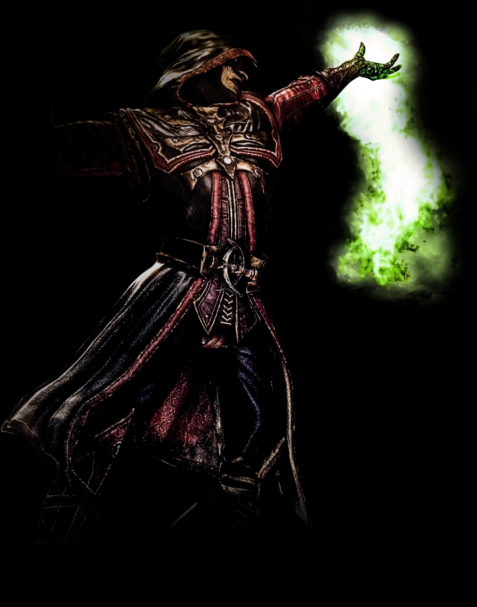

Ermac
Variation
- Mystic
- Spectral
- Master of Souls
Description
- Gains an improved Tele-lift and the Tele-Choke.
- Gains the ability to fly and unique attacks from the air.
- Gains Soul Ball and the ability to disappear to avoid damage.
Physical Attributes
- Gloves and lower, inner portion of his jacket emit a green glow.
- A glowing, green gem is placed on his chest.
- Three soul orbs flow around his body.